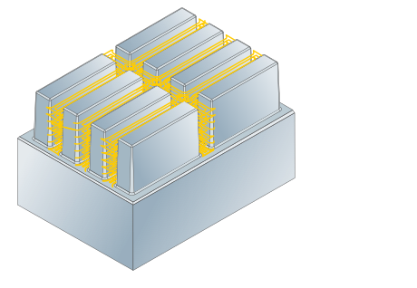
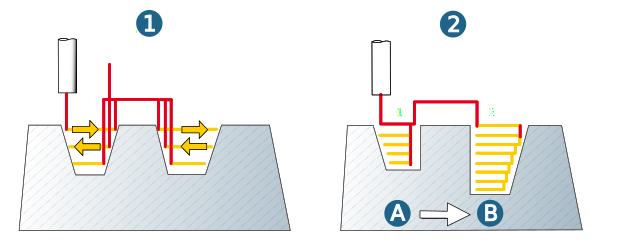
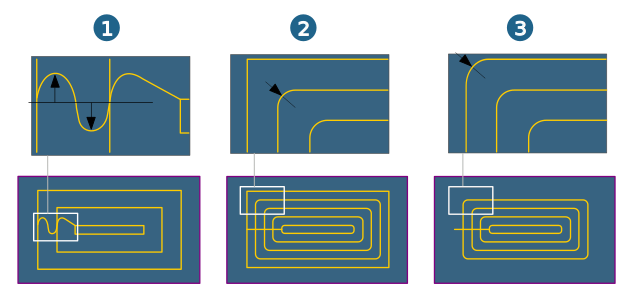

Strategy
Machining mode
Steep only (1): Only steep areas are machined.
Bottom only (2): Only flat areas are machined.
Specify the surfaces to be machined using the Slope angle for the Steep only machining mode. Only surfaces whose slope angle is greater than the defined value are machined.
|  |
Machining sequence
Plane (1): Machining is carried out level by level. In each Z-level the selected approach and retract macros will be executed. If there are several boundaries, these are machined in sequence. If a user-defined start point is also present, machining only takes place within the related boundary.
Pocket (2) : Stock removal with infeed optimization: Cavities are machined in sequence.
|  |
Cutting mode
Climb milling, Conventional milling: In the case of contour-parallel machining with continuous orientation, the following definitions apply: climb milling and conventional milling relate to clockwise rotating tools. To perform climb milling with an anticlockwise rotating tool, select conventional milling. For climb milling with tools rotating clockwise, the following machining directions apply:
(1) Outside machining in clockwise direction.
(2) Inside machining in counterclockwise direction.
|  |
Toolpath fillets
In contour-parallel machining, the toolpaths can be rounded in the plane.
Radius for horizontal infeed (1): the horizontal infeed between the tool paths is executed with an approach and departure radius.
Fillet radius (2): Abrupt changes in direction within the cutting toolpaths are rounded with the specified radius.
Fillet all toolpaths (3): Corners of the model contour are rounded with the radius defined above so that the machining contour deviates from the model contour at the outer corners.
|  |